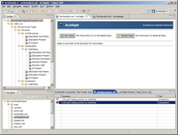

Introduction to ArchStudio
ArchStudio is a software and systems architecture development environment.
While most development environments, like
Microsoft Visual Studio
and
Borland JBuilder
are code-driven development environments, ArchStudio focuses on software
development from the perspective of
software and systems architecture.
We define architecture as the set of principal design decisions
about a system. This is an intentionally broad definition.
Every project in every domain will have different needs and quality
goals. This means that every project will have a somewhat different
set of design decisions that are considered principal by its
stakeholders.
The ArchStudio environment plays two roles in the development of
architectures:
First, ArchStudio is an architecture development environment.
That is, the ArchStudio developers have identified recurring
principal design concerns that occur in many domains and projects,
and attempted to support these. ArchStudio
has built-in support for modeling the hierarchical structure of complex
systems, the types of various components, connectors, and interfaces,
product-lines of systems that are related by a common base,
and so on.
Second, ArchStudio is an architecture meta-modeling environment.
ArchStudio is based on the highly-extensible
xADL 2.0
architecture description language. xADL allows stakeholders
to define and re-define the language's syntax and semantics to suit
their own needs, and ArchStudio provides the tool support for
this extensibility. If current modeling tools and notations are not
sufficient to capture a particular concern for a particular project,
ArchStudio and xADL can be extended to effectively provide support
for that concern without having to "re-invent the wheel." As such,
ArchStudio provides an ideal platform for domain experts and
architecture researchers who want to investigate new ways
of modeling architectural concepts without investing an
inordinate amount of time in infrastructure development.
ArchStudio Capabilities
Architecture Modeling: ArchStudio creates and manipulates
architecture descriptions expressed in the
xADL 2.0
architecture description language (ADL). xADL is the first
modularly-extensible architecture description language.
Rather than having its syntax and semantics defined monolithically,
in one huge chunk, xADL breaks up modeling features into modules
using standard XML schemas.
ArchStudio's integrated set of tools operates on xADL documents
much the same way as a word processor operates on text documents.
One major difference, however, is that ArchStudio tools integrate
"live"—meaning that a change in any tool is reflected
in all others immediately. As noted above, the xADL language
can be extended by end-users through the addition of new XML
schemas to support domain- or project-specific concerns and
modeling needs. New modules are even added to the core xADL
language from time to time as they are developed and contributed.
 Architecture Visualization: The xADL language defines the
structure of architecture description data, but it can be depicted
and manipulated in many ways. ArchStudio provides several different
visualizations for xADL 2.0 models. Archipelago, ArchStudio's
graphical editor, provides visualizations as symbol graphs -
the kind of box-and-arrow models common in tools
like Microsoft Visio and OmniGraffle. However, unlike PowerPoint
or OmniGraffle models, the graphical depictions in Archipelago aren't
just pictures - they are a user-editable graphical projection of
the underlying architecture model. ArchStudio includes other editors
as well, including ArchEdit, a syntax-directed editors that adapts
to new xADL schemas automatically with no recoding, and the Type
Wrangler, which provides a custom view of an architectural model
that makes it easier to achieve type consistency.
Architecture Visualization: The xADL language defines the
structure of architecture description data, but it can be depicted
and manipulated in many ways. ArchStudio provides several different
visualizations for xADL 2.0 models. Archipelago, ArchStudio's
graphical editor, provides visualizations as symbol graphs -
the kind of box-and-arrow models common in tools
like Microsoft Visio and OmniGraffle. However, unlike PowerPoint
or OmniGraffle models, the graphical depictions in Archipelago aren't
just pictures - they are a user-editable graphical projection of
the underlying architecture model. ArchStudio includes other editors
as well, including ArchEdit, a syntax-directed editors that adapts
to new xADL schemas automatically with no recoding, and the Type
Wrangler, which provides a custom view of an architectural model
that makes it easier to achieve type consistency.

Architecture Analysis: ArchStudio supports exploratory design
in all its editors - architectures are rarely perfect until the latest
stages of development. However, it is useful to be able to assess the
correctness and consistency of an architecture description. The Archlight
framework provides a way to automatically test architecture descriptions
against many different criteria. Errors can be displayed and inspected,
and users can navigate to the site of a problem in any editor with a few
mouse clicks. In keeping with ArchStudio's extensible nature, all tests
are provided by Archlight plug-ins, and users can add their own tests
(and even entirely new analysis engines) through Archlight's plug-in API.
Archlight ships with the powerful
Schematron XML constraint
engine, adapted to integrate seamlessly into the Archlight user interface.
Schematron allows complex architectural tests to be specified in
about a dozen lines of code.
ArchStudio Development Philosophy
A critical aspect of ArchStudio's ongoing development is that we
use ArchStudio to develop ArchStudio - we adopt our own
architecture-centric development approach in its development.
ArchStudio's architecture is specified in a xADL 2.0 file,
and this xADL file is part of the ArchStudio implementation.
Whenever ArchStudio starts up on a machine, its architecture
description is being parsed, and the information in that
description is used to instantiate and connect the components
and connectors in the architecture.
ArchStudio Development
ArchStudio is implemented in Java 2™ Standard Edition
(J2SE) version 5.0, also known as Java 1.5. It is implemented
as a set of Eclipse plug-ins.
It should run on any platform that supports Eclipse, including
Windows 2000 or better, MacOS X, and Linux/UNIX.
Although ArchStudio is a research project, its developers have
undertaken extensive efforts to mature and productize it. Its
previous release, ArchStudio 3, was a standalone Java application,
and sustained more than 70 releases over five years. The mature
ArchStudio 3 codebase is at the core of ArchStudio 4, but
ArchStudio 4 includes a number of exciting new features, including
significant user-interface and performance enhancements.
Where to Now?
ArchStudio is an open-source project and is free to download and
use. We encourage you to download and install
ArchStudio and experiment with it. Queries and support requests
are always appreciated on our mailing lists.
 Architecture Visualization: The xADL language defines the
structure of architecture description data, but it can be depicted
and manipulated in many ways. ArchStudio provides several different
visualizations for xADL 2.0 models. Archipelago, ArchStudio's
graphical editor, provides visualizations as symbol graphs -
the kind of box-and-arrow models common in tools
like Microsoft Visio and OmniGraffle. However, unlike PowerPoint
or OmniGraffle models, the graphical depictions in Archipelago aren't
just pictures - they are a user-editable graphical projection of
the underlying architecture model. ArchStudio includes other editors
as well, including ArchEdit, a syntax-directed editors that adapts
to new xADL schemas automatically with no recoding, and the Type
Wrangler, which provides a custom view of an architectural model
that makes it easier to achieve type consistency.
Architecture Visualization: The xADL language defines the
structure of architecture description data, but it can be depicted
and manipulated in many ways. ArchStudio provides several different
visualizations for xADL 2.0 models. Archipelago, ArchStudio's
graphical editor, provides visualizations as symbol graphs -
the kind of box-and-arrow models common in tools
like Microsoft Visio and OmniGraffle. However, unlike PowerPoint
or OmniGraffle models, the graphical depictions in Archipelago aren't
just pictures - they are a user-editable graphical projection of
the underlying architecture model. ArchStudio includes other editors
as well, including ArchEdit, a syntax-directed editors that adapts
to new xADL schemas automatically with no recoding, and the Type
Wrangler, which provides a custom view of an architectural model
that makes it easier to achieve type consistency.{kind=link}